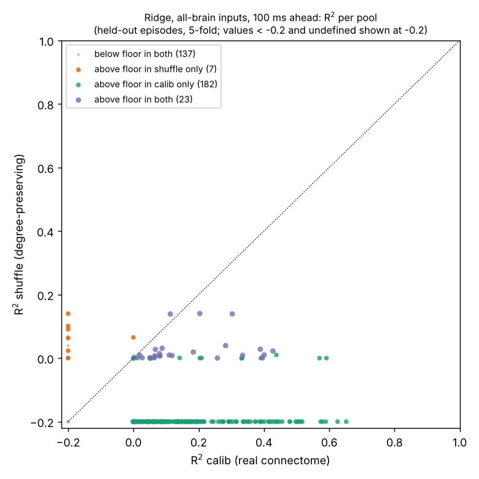
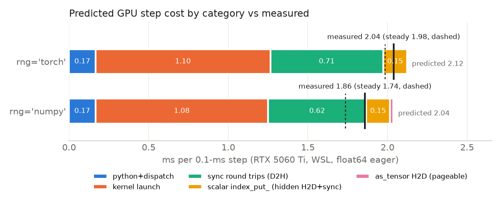
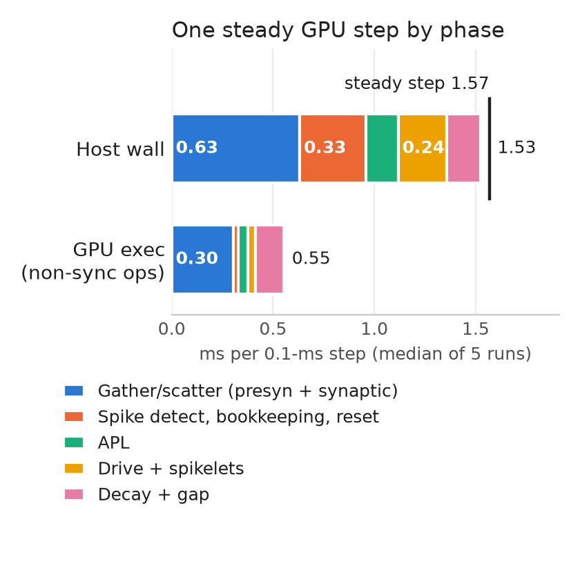

flybrain · week 4 · the whole male CNS · days 1–7 done · 20 nov 2026
Week 4 simulates the whole male central nervous system: the brain plus the ventral nerve cord (VNC, the fly's equivalent of a spinal cord), 165,122 neurons in all. It checks the nerve cord against known circuits, builds a 420-run dataset, and asks a first question of it: from brain activity, can a linear model predict the motor neurons 100 ms ahead? Every result is compared with a shuffled-wiring control. The GPU speed work has its own tab.
days 6–7 · 20 nov 2026
The week ends with a write-up and a first baseline. A ridge regression (a linear model with a penalty that keeps the weights small) reads the last 100 ms of brain activity and predicts the firing rate of each motor pool 100 ms later. A motor pool is the motor neurons (MNs) of one type on one side; there are 349. The score is R², the share of a pool's variation the model predicts on episodes it never saw: 1 is perfect, 0 is no better than guessing the average.
The shuffled control keeps each neuron's number of connections but rewires them at random. Most pools that vary with the real wiring never fire in the shuffled network, so their shuffled R² is undefined and they sit on the bottom edge.

results/figures/w4_ridge_r2_calib_vs_shuffle.png.Setup: 200 mixture episodes per network. Inputs are the brain neurons that fire at least 20 spikes in the training episodes, compressed to 200 principal components (summary patterns), at lags 0–100 ms in 10 ms bins. Episodes are split 5 ways, so every score comes from episodes the model did not train on. Only pools whose variance is above the Day 5 floor are scored. Re-running gave identical predictions.
Real wiring beats shuffled wiring. With the real connectome, 205 pools vary and their median R² is 0.138. With the shuffled one, only 30 vary, at a median of 0.017. Of the 205 real-wiring pools, 166 never fire in the shuffled network. On the 39 pools where both scores exist, the real wiring is higher in 38 (median 0.119 against 0.003).
Looming carries much of it. Looming is a dark expanding shadow, the fly's "something is coming at me" cue. On the same 144 pools, the median R² falls from 0.100 on all episodes to 0.065 on episodes without looming. The best pools (the jump muscle TTMn, the flight power muscles DLMn and DVMn, and the abdominal MNad28, R² 0.50–0.65) drop to 0.11 or below without looming, or cannot be scored there (DVMn never fires without looming). The front-leg promotor and femur reductor pools keep R² 0.51–0.60 without it.
No leak through the episode structure. When the targets are shifted in time within each episode, R² falls to the level of just predicting the average (median −0.000, no pool above 0.1).
Descending neurons carry nearly all of it, with a caveat. Descending neurons (DNs) are the brain's output cells into the nerve cord. Using only DNs as inputs reaches 94% of the all-brain summed R² with 200 components (median 0.127 against 0.138). That share depends on the number of components: with 500 components, the DN-only median is 77% of the all-brain one (0.103 against 0.133).
Next, in Week 5: refit without looming and per stimulus type, test the component bottleneck, add seeds, and add adaptation to the giant fiber. Sources: progress/week4/week4_summary.md and results/w4/regression/ridge/summary.md in the flybrain repo.
day 5 · 18–20 nov 2026
Day 4 showed that a low background hum on every sensory neuron made many motor neurons fire, as if the fly were never at rest. Day 5 found why, fixed it with Charlie's choices, found and damped a second runaway loop after the wind stimulus, and then generated the training set.
Two groups of sensory neurons in the nerve cord did almost all of it: 2,206 touch-bristle neurons and 1,040 unlabelled abdominal sensors. Driven together at 3 Hz, they gave 89–111% of the MN spikes of all nerve-cord sensory neurons (per seed). The path is local to the nerve cord and three synapses deep: a few first-layer interneurons that each receive thousands of sensory synapses, then AN19B001, then IN19B008, which drive wing-steering, haltere and abdominal MNs. The brain is not needed: cutting brain → nerve cord keeps 75–106% of the MN spikes.
Bristles are touch receptors that respond when they are bent. A steady hum on all of them at once is closer to touching the whole body than to rest. So this is mainly an artifact of the stimulus design, amplified by a nerve cord whose balance of excitation and inhibition was never calibrated.
682 of them already carry a type from MANC, an earlier nerve-cord connectome, but types whose sense is marked unknown. A newer female brain-and-nerve-cord connectome (BANC) labels those same types. A first mapping through it, not yet fully checked, puts 494 of them as abdominal bristles and 18 as oxygen sensors; some of its other labels, such as a bitter-taste group, are unverified. A separate check on our own wiring data agrees: one cluster of 740 of them (71%) has wiring partners that resemble those of touch bristles. No source we read supports a steady resting rate for this group.
| sensory neurons | background |
|---|---|
| Touch bristles in the nerve cord (2,206) | 0 Hz |
| Abdominal oxygen sensors (18) | 0 Hz |
| Other abdominal sensors (1,022) | fixed 1 Hz |
| All other sensory neurons | the episode's rate, 1–3 Hz |
| Looming | in about 1 of 6 episodes |
At 3 Hz this leaves 8–13 MN spikes per run against 544–745 with the old all-sensory background. At 1 Hz no MN fires in any of three seeds.
After the wind stimulus, five types of descending neurons in the GNG (the region under the brain that links it to the nerve cord) kept exciting each other: DNge027, GNG423, DNg21, DNg62 and DNge044. With no further input, the state lasted from 0.44 s to 1 s or more. The search for a cause found no mislabelled neuron: all five are cholinergic (excitatory) in MaleCNS (the male brain and nerve cord connectome this model is built from) and in FlyWire (an independent connectome of a female brain), the wiring is symmetric, and the model build removed no inhibition from the loop. The wiring is therefore most likely genuine strong mutual excitation, which runs on in a model without adaptation.
Charlie chose to scale the synapses among the five types by 0.3. Over 30 wind episodes, the tail after wind is 0.15 s or less in 22 and above 0.3 s in 1 (0.314 s). Runs without wind stayed spike-for-spike identical in the runs tested. In the full dataset run there was one exception: the background-only episode ep206 diverged from 2.33 s, when a spontaneous DNg62 spike no longer recruited two other loop neurons. The cost: motor output during wind falls by 10–29% (median 15%).
200 mixture episodes and 10 background-only episodes, 2.5 s each, run with the real and with the shuffled wiring: 420 runs, all valid. They took 5.92 h for 1,050 simulated seconds (median 20.8 s of wall time per simulated second). Looming is in 28 of the 200 mixtures, wind in 102.
The resting fly is quiet now. With the new background, MN output at 3 Hz is 1.7% of what it was. Background-only episodes give 1% of the dataset's motor variance (298 against 29,336 Hz²; variance of a firing rate is measured in Hz²), so the variance comes from the stimuli.
The real wiring varies far more. 205 of 349 pools vary (variance above 1 Hz² in 10 ms bins) with the real wiring, against 30 shuffled. Without the looming episodes it is 144 against 24. The summed variance is 79× higher (29,336 against 372 Hz²).
Looming and wind drive most of it. Looming episodes are 14% of the time bins but hold 55% of the variance, and 88% of the variance of the jump and flight power pools (TTMn and DLMn). Wind episodes hold 58% of the variance in 51% of the bins, mostly in the steering MNs.
Known leftovers. One wind tail reaches 0.51 s. The antennal lobe still fires occasional synchronous bursts (52 eligible events in the real-wiring mixtures); they were accepted, not fixed. Neither tripped a stop condition.
day 4 · 17 nov 2026
The regression needs varied episodes. Each one mixes 2–4 words (stimuli) from different senses, at random rates of 30–150 Hz, random onsets and durations of 0.2–1.0 s, on top of a background of 1–5 Hz on all sensory neurons. A pilot of 10 mixtures and 2 background-only episodes, each run with the real and the shuffled wiring, checked that the full set would be feasible and informative.
Motor pools vary, and the control separates. 202 of 349 pools vary with the real wiring, against 25 shuffled. Without the looming episodes, 144 still vary, so the signal does not depend on looming alone.
Looming dominates. Looming drives 71% of the variance. Lowering its strength does not help: the giant fiber already fires at 183 Hz at the weakest drive tried. That is the missing-adaptation problem from Day 3, not a dataset choice.
The background is a motor driver of its own. At 5 Hz, 730 non-sensory neurons are active per 100 ms and 164 MNs fire, about 9× the shuffled control. It does not start a lasting state: switched off, the activity is gone within 100 ms. Day 5 found the cause.
The full set is affordable. 200 episodes of 2.5 s for both networks were estimated at about 5.2 h. The recommendation for Day 5: 2.5 s episodes with words in the first 2.0 s, looming less often, and the background stored as a covariate or narrowed to 1–3 Hz.
day 3 · 17 nov 2026
The nerve cord is new in Week 4, so it was tested against descending neurons with known effects: the giant fiber (escape), MDN (backward walking), DNg100 (walking) and DNa02 (turning). Two calibrations followed, and a runaway state after looming was traced and fixed.
After looming, the brain stayed on. About 530 brain neurons kept firing after the stimulus ended, centred on the central complex, the brain's navigation centre. All 46 EPG neurons (the compass neurons that track the fly's heading) in all 16 glomeruli (the compartments the compass is divided into) were active: the whole compass ring locked on, not a single heading bump. The fly does enter a lasting defensive state after looming, but this was a runaway, not biology.
Two neuron types had the wrong sign. The ring was held on by input from GLNO and LPsP. In MaleCNS, the male connectome the model is built from, their transmitter is unclear (GLNO) or predicted acetylcholine (LPsP), so the model made them excitatory. FlyWire (a female brain connectome) and the literature say GABA or glutamate, so both are now inhibitory.
Two small loops were damped. A pair of DNg33 neurons and a quartet of IN19B040 neurons excite each other and run forever in a model without adaptation. Their synapses with each other are scaled ×0.3. This corrects a model limitation; it is not a claim about the connectome.
Result. After looming, the whole CNS now returns to silence within 100 ms of the stimulus ending. The descending-neuron panel is unchanged, and Week 3's words give the same spike counts (correlation 0.9965–1.0000). Still open: a different 11-neuron loop in the brain-only model, in 2 of about 20 runs; it did not appear in any of 19 full-CNS runs.
day 2 · 17 nov 2026
Week 3 chained episodes by saving the simulator's state and continuing from it. Day 2 adds the same to the PyTorch simulator. The saved state keeps everything a step needs: voltages, synaptic inputs, spikes in transit, random-number states. It stays on the device (CPU or GPU) between segments. A resume may also use different wiring, which Day 3 used to cut synapses halfway through a run.
A chained run is the same run. The test drove looming, then MDN, over 0.7 s of the full CNS, once in one go and once as three segments with both splits in the middle of a stimulus. The spikes, the motor-pool bins and the spike counts are identical, with both random-number generators.
Chaining is free. It cost nothing measurable.
day 1 · 16 nov 2026
Weeks 1–3 simulated the brain only; the nerve cord's neurons were in the model but cut off. Day 1 connects them, using the calibrated model of Week 3, and ports the simulator to PyTorch. The traced MaleCNS set (the male brain and nerve cord connectome) has 165,122 neurons, not the 166.7k sometimes quoted, which also counts untraced fragments. The motor neurons are grouped by side and type into 349 motor pools.
Drive 0–0.4 s at 150 Hz, run to 0.6 s, seed 0. Active MNs with the real and the shuffled wiring.
| stimulus | real | shuffled | main motor groups, real wiring |
|---|---|---|---|
| looming | 189 | 13 | wing power DLM 109 Hz, DVM 56, TTM jump 36, haltere 30 |
| DNg100 | 81 | 2 | hind-leg trochanter-femur 19 Hz, wing pleurosternal 16, wing steering hg 14 |
| MDN | 41 | 2 | hind-leg trochanter-femur 16 Hz, thorax-coxa 6 |
| DNa02 | 30 | 2 | neck 4.7 Hz, hind/mid coxa 2–4 |
| sugar | 7 | 1 | mid leg, under 1 Hz |
| vinegar | 0 | 2 | – |
| giant fiber (DNp01) | 1 | 0 | TTM 4.4 Hz |
| none | 0 | 0 | – |
The simulator is exact. PyTorch on CPU gives the same spikes as the NumPy simulator, neuron for neuron, and runs about twice as fast. The time goes on per-step overhead (about 1.6 ms per 0.1 ms step), not on synapses.
The nerve cord is silent at rest, and every stimulus returns to silence after it ends, except looming, which leaves a tail (fixed on Day 3).
The shuffled wiring almost never reaches the muscles. It activates at most 13 MNs, against up to 189 with the real wiring. Unlike the word readout of Weeks 2–3, brain-to-motor output depends strongly on the real wiring. This is the first Phase 2 result where the control clearly separates.
Plausible, not yet validated. Looming gives a takeoff-like pattern, and MDN reaches the hind legs first. The giant fiber barely drives the jump muscle (4 Hz), because its main link to it is electrical; Day 3 adds it.
Day 3 · where the GPU step goes
One simulated 0.1 ms step takes about 1.7 ms of wall time on an RTX 5060 Ti (under WSL) once the network is running. The same step takes 0.6 ms on 6 CPU threads, about a third of that. The question was why. We timed the building blocks one by one (launching a tiny GPU kernel, waiting for the GPU, small copies), counted how often a real step uses each, and added them up. The whole measurement ran five times, and every number below is the median of the five runs with the range in brackets.
The step is held up by the host, not by GPU arithmetic. It launches about 106 tiny kernels and makes the CPU wait for the GPU 10 times. With unit costs taken as medians across the runs, those costs add up to within 5% of the measured steady step. Predicted from each run's own unit costs, the median ratio is 1.10 (numpy) and 1.24 (torch), because several of the GPU timings switch between a fast and a slow value from run to run.
| ms per step | numpy rng | torch rng |
|---|---|---|
| python+dispatch | 0.16 | 0.16 |
| kernel launch | 1.00 | 1.01 |
| sync round trips (D2H) | 0.38 | 0.47 |
| scalar index_put_ (hidden H2D+sync) | 0.13 | 0.13 |
| as_tensor H2D (pageable) | 0.02 | 0.00 |
| Predicted (unit costs = medians of runs) | 1.70 | 1.77 |
| Predicted per run, median [min–max] | 1.89 [1.66–2.40] | 2.04 [1.75–2.62] |
| Measured, steady state (steps ≤ 5 ms) | 1.68 [1.56–1.71] | 1.69 [1.60–1.78] |
| Measured, all steps | 2.70 [1.68–3.90] | 2.31 [2.00–3.73] |
| Share of stall steps (~11 ms) | 11.0% [0.1%–24.9%] | 6.6% [3.7%–21.0%] |
| Predicted / steady, per run | 1.10 [1.06–1.44] | 1.24 [1.04–1.55] |
Medians across 5 runs, [min–max] across runs. Categories use unit costs that are medians across runs and sizes.

v[idx] = v_rst, which quietly copy the constant to the GPU and wait.Measured 2026-11-18 on an RTX 5060 Ti, driver 610.88, WSL 3.0.5, PyTorch 2.11 (CUDA 12.8), float64, looming stimulus. Each run measured 1,990 warm steps, and the whole suite ran five times. Many GPU micro-timings on this machine vary by 2–16× between runs; the full list is in the flybrain repo under perf/week04_day3.md.
Day 4 · step anatomy
Day 3 added costs up. Day 4 timed one steady step phase by phase on the same GPU, with a copy of the simulator loop that is checked to produce exactly the same spikes as the original over 300 steps. For each phase we measured how long the CPU spends on it, how much real GPU work it contains, and how many times it makes the CPU wait for the GPU. As before, every number is the median of five runs with the range in brackets.
The phases add up to 97% of the measured step. Two of them, both of which move synaptic input from the neurons that spiked (presynaptic gain and the synaptic gather/scatter), take 0.63 ms of the 1.52 ms. They launch about half of the step's 105 kernels and hold most of its real GPU work. The spike phase (find the spiking neurons, mark them refractory, reset them) takes another 0.33 ms with almost no GPU work at all: it is five waits for the GPU. Across the whole step the GPU computes for about 0.56 ms, roughly a third of the wall time, and nvidia-smi reports it busy 19% of the time.
| phase | wall ms | GPU exec ms | syncs | kernels |
|---|---|---|---|---|
| presyn | 0.32 [0.32–0.34] | 0.16 | 1 | 29 |
| synaptic | 0.31 [0.31–0.42] | 0.15 | 1 | 25 |
| apl | 0.16 [0.15–0.17] | 0.05 | 1 | 9 |
| threshold+nonzero | 0.15 [0.14–0.21] | 0.01 | 1 | 3 |
| spikelets | 0.12 [0.12–0.14] | 0.01 | 1 | 3 |
| drive | 0.12 [0.11–0.13] | 0.03 | 1 | 6 |
| reset | 0.10 [0.10–0.11] | 0.01 | 2 | 5 |
| decay | 0.10 [0.09–0.11] | 0.08 | 0 | 14 |
| bookkeeping | 0.07 [0.07–0.08] | 0.00 | 2 | 2 |
| gap | 0.07 [0.07–0.08] | 0.06 | 0 | 9 |
| ring | 0.00 [0.00–0.00] | 0.00 | 0 | 0 |
| Sum of phase medians | 1.52 [1.49–1.74] | 0.56 | 10 | 105 |
| Steady step (≤ 5 ms), same pass | 1.57 [1.52–1.81] | |||
| Sum / steady | 0.97 [0.96–0.98] | |||
| Steady step, uninstrumented run_trial | 1.61 [1.55–1.86] | |||
| Steady step, with CUDA events + NVTX | 1.85 [1.72–2.05] | |||
| Share of stall steps (> 5 ms) | 7.8% [2.1%–14.9%] | |||
| GPU utilisation, nvidia-smi (%) | 19 [3–22] | |||
| GPU exec / wall (non-sync ops) | 0.34 [0.30–0.36] | |||
Medians across 5 runs, [min–max] across runs. Wall: host perf_counter per phase, steady steps only. GPU exec: kernels of the non-sync ops timed with the host hidden (a GPU sleep before each op); the 10 sync ops are excluded. Kernels: aten ops that launch GPU work.

Measured 2026-11-18, same machine and settings as Day 3. GPU work was timed by making the GPU pause before each operation, so the CPU is never the bottleneck while it is being timed. Utilisation varied from 3% to 22% between runs, lowest in the runs with the most stall steps. A GPU timeline from Nsight Systems could not be recorded: the installed version predates this driver. Details are in the flybrain repo under perf/week04_day4.md.